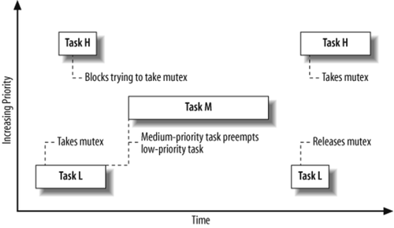

22. A Spoonful of Sewage
If you put a spoonful of sewage in a barrel full of wine, you get sewage.
Schopenhauer's Law of Entropy
Unlike most things that we engineer, software has a binary notion of correctness: either it is correct, or it is flawed. That is, unlike a bridge or an airplane or a microprocessor, software doesn't have physical parameters that limit the scope of its correctness; software doesn't have a rated load or a maximum speed or an environmental envelope. In this regard, software is much more like mathematical proof than physical machine: a proof's elegance or inelegance is subjective, but its correctness is not.
And indeed, this lends a purity to software that has traditionally only been enjoyed by mathematics: software, like mathematics, can be correct in an absolute and timeless sense. But if this purity of software is its Dr. Jekyll, software has a brittleness that is its Mr. Hyde: given that software can only be correct or flawed, a single flaw can become the difference between unqualified success and abject failure.
Of course, this is not to say that every bug is necessarily fatal—just that the possibility always exists that a single bug will reveal something much larger than its manifestations: a design flaw that calls into question the fundamental assumptions upon which the software was built. Such a flaw can shake software to its core and, in the worst case, invalidate it completely. That is, a single software bug can be the proverbial spoonful of sewage in the barrel of wine, turning what would otherwise be an enjoyable pleasure into a toxic stew.
For me personally, this fine line between wine and sewage was never so stark as in one incident in the development of a critical subsystem of the Solaris kernel in 1999. This problem—and its solution—are worth discussing at some length, for they reveal how profound design defects can manifest themselves as bugs, and how devilish the details can become when getting a complicated and important body of software to function perfectly.
A word of caution before we begin: this journey will take us deep into the core of the Solaris kernel, into some of the most fundamental and subtlest mechanism of the operating system. As such, the detail may seem crushing; like adventurous spelunkers, we will at times be wading through dark, cold water or squeezing through suffocatingly tight passages—but for those that make the trip, a hidden and beautiful underground cavern awaits. So if you're ready, don your headlamp, grab a water bottle, and let's descend into the Solaris kernel….
The subsystem that is the center of our story is the turnstile subsystem. A turnstile is the mechanism used to block and wake up threads in Solaris—it is the underpinning of synchronization primitives such as mutexes and reader/writer locks. Or, to let the code speak for itself:[*]
[*] This code is open source and is available at http://src.opensolaris.org/source/xref/onnv/onnv-gate/usr/src/uts/common/os/turnstile.c.
/* * Turnstiles provide blocking and wakeup support, including priority * inheritance, for synchronization primitives (e.g. mutexes and rwlocks). * Typical usage is as follows: * * To block on lock 'lp' for read access in foo_enter( ): * * ts = turnstile_lookup(lp); * [ If the lock is still held, set the waiters bit * turnstile_block(ts, TS_READER_Q, lp, &foo_sobj_ops); * * To wake threads waiting for write access to lock 'lp' in foo_exit( ): * * ts = turnstile_lookup(lp); * [ Either drop the lock (change owner to NULL) or perform a direct * [ handoff (change owner to one of the threads we're about to wake). * [ If we're going to wake the last waiter, clear the waiters bit. * turnstile_wakeup(ts, TS_WRITER_Q, nwaiters, new_owner or NULL); * * turnstile_lookup( ) returns holding the turnstile hash chain lock for lp. * Both turnstile_block() and turnstile_wakeup( ) drop the turnstile lock. * To abort a turnstile operation, the client must call turnstile_exit( ). * ...
The turnstile abstraction thus allows synchronization primitives to focus on their own particular policy without worrying about the delicate mechanics of blocking and awakening. As the block comment mentions, turnstile_block() is the function called to actually block the current thread on a synchronization primitive, and it is in this function that our subterranean journey begins in earnest with this cryptic comment of mine:
/* * Follow the blocking chain to its end, willing our priority to * everyone who's in our way. */ while (t->t_sobj_ops != NULL && (owner = SOBJ_OWNER(t->t_sobj_ops, t->t_wchan)) != NULL) { if (owner == curthread) { if (SOBJ_TYPE(sobj_ops) != SOBJ_USER_PI) { panic("Deadlock: cycle in blocking chain"); } /* * If the cycle we've encountered ends in mp, * then we know it isn't a 'real' cycle because * we're going to drop mp before we go to sleep. * Moreover, since we've come full circle we know * that we must have willed priority to everyone * in our way. Therefore, we can break out now. */ if (t->t_wchan == (void *)mp) break;
For me, this comment (and the two lines of code to which it refers, all highlighted in bold) will always be the canonical difference between sewage and wine: they were added in the final, frenzied moments of Solaris 8, in one of the more intense experiences of my engineering career—a week-long collaboration with fellow Sun engineer Jeff Bonwick that required so much shared mental state that he and I both came to call it "the mind-meld."
We will come back to this code and the mind-meld behind it, but to get there, we first need to journey much deeper into the inner workings of turnstiles, exploring in particular how turnstiles address the classic problem of priority inversion.
If you are unfamiliar with the problem of priority inversion, it can be described as follows: given three threads at three different priorities, if the highest priority thread blocks on a synchronization object held by the lowest priority thread, the middling priority thread could (in a pure priority preemptive system running on a uniprocessor) run in perpetuity, starving the highest priority thread. The result is illustrated in Figure 22-1.
Figure 22-1. Priority inversion
One mechanism to solve priority inversion is a technique called priority inheritance. Under priority inheritance, when one thread is going to block on a resource held by a lower priority thread, the higher priority thread wills its priority to the lower priority thread for the duration of the critical section. That is, the priority of the lower priority thread is boosted to that of the higher priority thread as long as the lower priority thread owns a resource that the higher priority thread needs. When the lower priority thread (running with a boosted priority) exits the critical section—when it releases the synchronization primitive upon which the higher priority thread is blocked—it awakens the blocked higher priority thread and returns itself to the lower priority. In this way, no middling priority thread ever has the opportunity to run—the inversion is averted.
Now, in Solaris we have long had priority inheritance for kernel synchronization primitives; indeed, this is one of the architectural differences between SunOS 4.x and Solaris 2.x, and it is one of the core services of the turnstile subsystem. And just getting priority inheritance right for kernel synchronization primitives is nasty: one must know who owns a lock, and one must know which lock the owner is blocked on (if any). That is, if a thread is blocking on a lock that is owned by a thread that is itself blocked, we need to be able to determine what lock the owning thread is blocked on, and which thread owns that lock. We call this chain of blocked threads the blocking chain, and because its nuances are central to the implementation of priority inheritance, it's worth fleshing out a plausible and concrete example of how one might develop.
For an example of a blocking chain, we can look to the interaction between two well-known Solaris subsystems: the kernel memory allocator and the Zettabyte Filesystem (ZFS). For purposes of our example, we don't need to understand these grand subsystems in any detail; we're just shining a flashlight into them, not exploring their many nooks and crannies. The salient bits about the kernel memory allocator are that it is an object-caching allocator—all allocations are served from caches that manage objects of a fixed size—and that it caches allocated buffers in per-CPU structures called magazines. When a magazine is exhausted, allocations are satisfied out of a structure called a depot. This tiered structure is highly scalable with respect to CPUs: by satisfying most allocations out of the per-CPU magazine structure (upon which contention is highly unlikely), the allocator exhibits near-linear CPU scalability. And while it is orthogonal to our purpose at the moment, I can't help but illuminate an elegant detail in the code that executes when a per-CPU magazine is empty and the depot lock (which is global per-cache) must be acquired:
/*
* If we can't get the depot lock without contention,
* update our contention count. We use the depot
* contention rate to determine whether we need to
* increase the magazine size for better scalability.
*/
if (!mutex_tryenter(&cp->cache_depot_lock)) {
mutex_enter(&cp->cache_depot_lock);
cp->cache_depot_contention++;
}
This code doesn't simply acquire the lock, it attempts to acquire the lock, keeping track of the number of times that this attempt fails because the lock was held. The resulting count is a rough indicator of contention at the global layer, and if the count becomes too high in a given interval of time, the system increases the number of buffers stored at the per-CPU layer, reducing the contention at the global layer. This simple mechanism thus allows the subsystem to dynamically adjust its structures to reduce its own contention! Beautiful code, for certain.
Let's return to the construction of our example, and now to ZFS, where all we need to know is that files and directories have an in-memory structure called a znode.
Given this background about the kernel memory allocator and ZFS, we can envision the following sequence of events:
-
A thread T1, attempts an allocation from the kmem_alloc_32 cache on CPU 2, which requires taking the lock for CPU 2's kmem_alloc_32 magazine. Discovering that the magazines for CPU 2 are all empty, T1 acquires the depot lock for the kmem_alloc_32 cache, and it is then preempted, with both the CPU 2 magazine lock and the depot lock held.
-
A third thread T3, runs on CPU 3 after T2 has blocked. This thread is attempting to create the ZFS file /foo/bar/mumble. As part of this operation, it must create a ZFS directory entry lock for the entry mumble in the directory /foo/bar. It acquires the lock on the znode that corresponds to /foo/bar and then attempts to allocate a zfs_dirlock_t. Because a zfs_dirlock_t is 32 bytes in size, this allocation is to be satisfied from the kmem_alloc_32 cache, and T3 therefore attempts to acquire the magazine lock for the kmem_alloc_32 cache on CPU 3—but it sees that the lock is held by T2, and it blocks.
When T4 blocks, it is blocking on T3, which is in turn blocked on T2, which is in turn blocked on T1—and it is this chain of threads that constitutes the blocking chain. Having seen what a blocking chain might actually look like in the wild, it might be easier to appreciate the essential subtlety of getting priority inheritance correct: when a blocking thread wills its priority to its blocking chain, we must iterate over the entire blocking chain coherently. That is, when we iterate over the blocking chain, we must see a consistent snapshot of all of the threads that were on the blocking chain at that instant—no more and no less. In the context of this example, we wouldn't want to will our priority to T1 after it released the lock blocking T2 (and thus, transitively, T4)—this would potentially leave T1 at an artificially high priority.
So, how can we iterate over the blocking chain coherently? In Solaris, a thread's dispatcher state (e.g., whether it's running, enqueued to run, or sleeping) is protected by acquiring a special spin lock known as its thread lock; it might be tempting to believe that in order to process the blocking chain coherently, we should simply acquire all of the thread locks at once. This won't work, however, in part because of the way that thread locks are implemented.
A thread lock is a very special lock because it is not a spin lock in any traditional sense, but rather a pointer to a spin lock, with the lock that it points to being the lock that protects the structure currently managing the thread; as the management of a thread is changed from one structure to another, its thread lock is changed to point to the correct lock.
For example, if a thread is enqueued to run on a CPU, its thread lock points to a lock for the dispatch queue on that CPU for the thread's priority level, but when the thread is running on a CPU, the thread lock is changed to point to a lock within the CPU's cpu_t structure. And if the thread should block on a synchronization primitive, its thread lock is changed to point to a lock in the (cue ominous, foreshadowing music) turnstile table.
This last structure will become much more important as we descend deeper, but for now, the critical point is this: we cannot simply acquire every thread lock because multiple threads can point to the same underlying dispatcher lock; if we simply tried to acquire them all, we might deadlock on ourselves as we spin, attempting to acquire a lock that we ourselves have already acquired ]
]
[
Fortunately, we don't actually have to hold every thread lock to assure a consistent snapshot of the blocking chain, thanks to an important (if self-evident) property of blocking chains: they can only become unwound from their unblocked ends. That is, the only way for a thread blocked on a synchronization primitive to become unblocked is to be explicitly awoken by the thread owning the synchronization primitive.
So in our example, the only way for (say) T3 to become runnable is to be awoken by T2. So if we proceed atomically from T3 to T2, and then atomically from T2 to T1, we're guaranteed that there is no window by which T3 can be awoken—even if we have dropped the thread lock for T3.
This means that we need not lock the entire chain—we need only lock two consecutive elements at a time: when T4 is to block, we can grab the lock for T3, then grab the lock for T2, then drop the lock for T3 and acquire the lock for T1, then drop the lock for T2, and so on. Because we're only looking to hold two thread locks at a time, it's easy to deal with the case where they point to the same underlying lock: if they point to the same underlying lock, we just retain that lock as we iterate over that element in the blocking chain.
This has almost resolved the issue of iterating over blocking chains, but a substantial hurdle remains—one that is the ramification of a different design decision. Recall that we mentioned that thread locks can point to dispatcher locks in the turnstile table. We now need to explain the turnstile table, as we will be encountering it several more times in our journey.
The turnstile table is a hash table keyed by the virtual address of the synchronization primitive; it is the table of queues upon which blocked threads are queued. Each queue is locked at its head, by a turnstile lock—and it is one of these locks that a thread's thread lock will point to if the thread is blocked on a synchronization primitive.
This is a critical, if subtle, design decision: when a thread is blocked on a synchronization primitive, it is not enqueued on a queue that is unique to the synchronization primitive, but rather one that may be shared by several synchronization primitives that happen to map to the same turnstile table entry.
Why was it done this way? As a highly parallel operating system, Solaris has fine-grained synchronization, meaning that there are many (many!) instances of synchronization primitives, and that they are manipulated very frequently—nearly always with zero contention. Thus, the structures that represent kernel synchronization primitives—kmutex_t and krwlock_t—must be as small as possible, and their manipulation must optimize for the common, uncontended case. Embedding the queue for the blocking chain in the synchronization primitive itself would lead to an unacceptable impact, either on space (by bloating the size of the primitive with a queue pointer and dispatcher lock) or on time (by slowing down the uncontended case to maintain a more complicated structure). Either way, it is unacceptable to situate the data structure for a blocking chain with the synchronization primitive itself—a turnstile table (or something like it) is required.
To restate the ramifications of the turnstile table: threads blocked on different synchronization primitives can have their thread locks point to the same turnstile lock. Given that we must hold two locks at a time while traversing the blocking chain, this creates a nasty lock ordering problem. When Jeff encountered this problem in his original implementation, he solved it in an elegant way; his comment in turnstile_interlock() explains the problem and his solution:
/* * When we apply priority inheritance, we must grab the owner's thread lock * while already holding the waiter's thread lock. If both thread locks are * turnstile locks, this can lead to deadlock: while we hold L1 and try to * grab L2, some unrelated thread may be applying priority inheritance to * some other blocking chain, holding L2 and trying to grab L1. The most * obvious solution -- do a lock_try( ) for the owner lock -- isn't quite * sufficient because it can cause livelock: each thread may hold one lock, * try to grab the other, fail, bail out, and try again, looping forever. * To prevent livelock we must define a winner, i.e. define an arbitrary * lock ordering on the turnstile locks. For simplicity we declare that * virtual address order defines lock order, i.e. if L1 < L2, then the * correct lock ordering is L1, L2. Thus the thread that holds L1 and * wants L2 should spin until L2 is available, but the thread that holds * L2 and can't get L1 on the first try must drop L2 and return failure. * Moreover, the losing thread must not reacquire L2 until the winning * thread has had a chance to grab it; to ensure this, the losing thread * must grab L1 after dropping L2, thus spinning until the winner is done. * Complicating matters further, note that the owner's thread lock pointer * can change (i.e. be pointed at a different lock) while we're trying to * grab it. If that happens, we must unwind our state and try again. */
This lock ordering issue is part of what made it difficult to implement priority inheritance for kernel synchronization objects—and unfortunately, kernel-level priority inheritance solves only part of the priority inversion problem.
Providing priority inheritance exclusively for kernel synchronization objects has an obvious shortcoming: to build a multithreaded real-time system, one needs priority inheritance not just for kernel-level synchronization primitives, but also for user-level synchronization primitives. And it was this problem—user-level priority inheritance—that we decided to address in Solaris 8. We assigned an engineer to solve it, and (with extensive guidance from those of us who best understand the guts of scheduling and synchronization), the new facility was integrated in October 1999.
A few months later—in December of 1999—I was looking at an operating system failure that a colleague had encountered. It was immediately clear that this was some sort of defect in our implementation of user-level priority inheritance, but as I understood the bug, I came to realize that this was no surface problem: this was a design defect—and I could practically smell our wine turning to sewage.
Before explaining this bug—and the design defect that it revealed—it's worth discussing the methodology used to debug it. An important skill for any software engineer is the ability to analyze the failure of a complicated software system, and to present that analysis rigorously. And in any sufficiently complicated system, failure analysis will often be forensic: it will be based on a snapshot of system state at the time of failure. Indeed, such a snapshot of state is so fundamental to debugging that it carries with it a moniker from the dawn of computing: it is a "core dump."
This variant of debugging—postmortem debugging—can be contrasted to the more traditional in situ debugging by which one is debugging a live and running (albeit stopped) system. Whereas with in situ debugging one can use breakpoints to iteratively test hypotheses about the system, with postmortem debugging one can use only the state of the system at the time of failure to test hypotheses. While this means that postmortem debugging is necessarily a less complete methodology than in situ debugging (as there are bugs for which there simply does not exist enough state at the time of failure to eliminate a significant number of hypotheses), there are many bugs that are not sufficiently reproducible to apply in situ debugging—there is no other way to debug them but postmortem.
Moreover, because the more limited options afforded by postmortem debugging require more rigorous thinking around both hypothesis generation and validation, developing one's ability to debug postmortem makes one much more efficient at in situ debugging.
Finally, because the state of the system is static, one can present specific, rigorous analysis to peers, who can then perform their own analysis—in parallel—and draw their own conclusions. And even if not actively validated by others, this analysis is valuable, for drafting it forces one to address the holes in one's own logic. In short, postmortem debugging is an essential part of our craft—a skill that every serious software engineer should develop.
Given that background on (and plug for) postmortem debugging, and with the caveat that this analysis will not yet be completely (or perhaps not at all) comprehensible, here is my analysis of the bug at hand, as it appeared verbatim in my initial bug report:[ ]
]
[
[ bmc, 12/13/99 ] The following sequence of events can explain the state in the dump (the arrow denotes an ordering): Thread A (300039c8580) Thread B (30003c492a0) (executing on CPU 10) (executing on CPU 4) +-------------------------------------+ +-------------------------------------+ | Calls lwp_upimutex_lock() on | | | | lock 0xff350000 | | | | | | | | lwp_upimutex_lock() acquires | | | | upibp->upib_lock | | | | | | | | lwp_upimutex_lock(), seeing the | | | | lock held, calls turnstile_block() | | | | | | | | turnstile_block(): | | | | - Acquires A's thread lock | | | | - Transitions A into TS_SLEEP | | | | - Drops A's thread lock | | | | - Drops upibp->upib_lock | | | | - Calls swtch() | | | : : : : +----------------------------------------------------------------------+ | Holder of 0xff350000 releases the lock, explicitly handing it off to | | thread A (and thus setting upi_owner to 300039c8580) | +----------------------------------------------------------------------+ : : : : | | | | | Returns from turnstile_block() | | | | | | Calls lwp_upimutex_lock() on | | | | lock 0xff350000 | | | | | | | | lwp_upimutex_lock() acquires | | | | upibp->upib_lock | | | | Seeing the lock held (by A), calls | | | | turnstile_block() | | Calls lwp_upimutex_owned() to | | | | check for lock hand-off | | turnstile_block(): | | | | - Acquires B's thread lock | | lwp_upimutex_owned() attempts | | - Transitions B into TS_SLEEP, | | to acquire upibp->upib_lock | | setting B's wchan to upimutex | | | | corresponding to 0xff350000 | | upibp->upib_lock is held by B; | | - Attempts to promote holder of | | calls into turnstile_block() | | 0xff350000 (Thread A) | | through mutex_vector_enter() | | - Acquires A's thread lock | | | | - Adjusts A's priority | | turnstile_block(): | | - Drops A's thread lock | | <--------------+ | | - Acquires A's thread lock | | - Drops B's thread lock | | - Attempts to promote holder of | | | | upibp->upib_lock (Thread B) | | | | - Acquires B's thread lock | | - Drops upibp->upib_lock | | - Adjusts B's priority | | | | - Drops B's thread lock | | | | - Seeing that B's wchan is not | | | | NULL, attempts to continue | | | | priority inheritance | | | | - Calls SOBJ_OWNER() on B's wchan | | | | - Seeing that owner of B's wchan | | | | is A, panics with "Deadlock: | | | | cycle in blocking chain" | | | | | | | +------------------------------------+-+--------------------------------------+ As the above sequence implies, the problem is in turnstile_block() THREAD_SLEEP(t, &tc->tc_lock); t->t_wchan = sobj; t->t_sobj_ops = sobj_ops; ... /* * Follow the blocking chain to its end, or until we run out of * inversions, willing our priority to everyone who's in our way. */ while (inverted && t->t_sobj_ops != NULL && (owner = SOBJ_OWNER(t->t_sobj_ops, t->t_wchan)) != NULL) { ... } (1) --> thread_unlock_nopreempt(t); /* * At this point, "t" may not be curthread. So, use "curthread", from * now on, instead of "t". */ if (SOBJ_TYPE(sobj_ops) == SOBJ_USER_PI) { (2) --> mutex_exit(mp); ... We're dropping the thread lock of the blocking thread (at (1)) before we drop the upibp->upib_lock at (2). From (1) until (2) we are violating one of the invariants of SOBJ_USER_PI locks: when sleeping on a SOBJ_USER_PI lock, _no_ kernel locks may be held; any held kernel locks can yield a deadlock panic.
Understanding the analysis requires some knowledge of implementation nomenclature:
upibp
-
A pointer to the in-kernel state associated with a held user-level priority inheriting lock; the upib_lock is the lock that protects this state.
t_wchan
-
The member of the thread structure that contains the pointer to the synchronization primitive upon which the thread (if any) is blocked.[§]
[§] wchan stands for wait channel, a term that dates back to the earliest days of UNIX at Bell Labs, and is itself almost certainly a bastardization of event channels from Multics.
SOBJ_TYPE
-
A macro that takes the ops vector for a synchronization primitive and returns a constant denoting the type; SOBJ_USER_PI is the constant that denotes a user-level, priority-inheriting lock.
The essence of the problem is this: for user-level locks, we normally keep track of the state associated with the lock (e.g., whether or not there's a waiter) at user-level—that information is considered purely advisory by the kernel. (There are several situations in which the waiters bit can't be trusted, and the kernel knows not to trust it in these situations.)
To implement priority inheritance for user-level locks, however, one must become much more precise about ownership; the ownership must be tracked the same way we track ownership for kernel-level synchronization primitives. That is, when we're doing the complicated thread lock dance in turnstile_interlock(), we can't be doing loads from user-level memory to determine ownership. The nasty implication of this is that the kernel-level state tracking the ownership of the user-level lock must itself be protected by a lock, and that (in-kernel) lock must itself implement priority inheritance to avoid a potential inversion.
This leads us to a deadlock that we did not predict: the in-kernel lock must be acquired and dropped both to acquire the user-level lock and to drop it. That is, there are conditions in which a thread owns the in-kernel lock and wants the user-level lock, and there are conditions in which a thread owns the user-level lock and wants the in-kernel lock. As a result, there can exist blocking chains that appear circular—which will cause the kernel to induce an explicit panic. And indeed, that's exactly what happened in the failure analyzed above: thread A owned the user-level lock and wanted the in-kernel lock (upib_lock), and thread B owned the in-kernel lock and wanted the user-level lock—deadlock!
Once I understood the problem, it was disconcertingly easy to reproduce: in a few minutes I was able to pound out a test case that panicked the system in the same manner as seen in the dump. (As an aside, this is one of the most gratifying feelings in software engineering: analyzing a failure postmortem, discovering that the bug should be easily reproduced, writing a test case testing the hypothesis, and then watching the system blow up just as you predicted. Nothing quite compares to this feeling; it's the software equivalent of the walk-off home run.)
While I had some ideas on how to fix this, the late date in the release and the seriousness of the problem prompted me to call Jeff at home to discuss. As Jeff and I discussed the problem, we couldn't seem to come up with a potential solution that didn't introduce a new problem. Indeed, the more we talked about the problem, the harder it seemed—and we realized that we had erred originally, both by underestimating the problem and by delegating its solution.
Worse, Jeff and I began to realize that there must be another manifestation lurking. We knew that if one were blocking on the in-kernel lock when the false deadlock was discovered, the kernel would explicitly panic. But what if one were blocking on the user-level lock when the false deadlock was discovered? We quickly determined (and a test case con-firmed) that in this case, the attempt to acquire the user-level lock would (erroneously) return EDEADLK. That is, the kernel would see that the "deadlock" was induced by a user-level synchronization primitive, and therefore assume that it was an application-induced deadlock—a bug in the application.
So in this failure mode, a correct program would have one of its calls to pthread_mutex_lock erroneously fail—a failure mode even more serious than a panic, because any application that didn't check the return value of pthread_mutex_lock (as one well might not) could easily corrupt its own data by assuming that it owned a lock that, in fact, it had failed to acquire.
This problem, if encountered in the wild, would be virtually undebuggable—it absolutely had to be fixed.
So, how to solve these problems? We found this to be a hard problem because we kept trying to find a way to avoid that in-kernel lock. I have presented the in-kernel lock as a natural constraint on the problem, but that was a conclusion that we came to only with tremendous reluctance. Whenever one of us came up with some scheme to avoid the lock, the other would find some window invalidating the scheme.
After exhausting ourselves on the alternatives, we were forced to the conclusion that an in-kernel lock was a constraint on the user-level priority inheritance problem—and our focus switched from avoiding the situation to detecting it.
There are two cases to detect: the panic case and the false deadlock case. The false dead-lock case is actually pretty easy to detect and handle, because we always find ourselves at the end of the blocking chain—and we always find that the lock that we own that induced the deadlock is the in-kernel lock passed as a parameter to turnstile_block. Because we know that we have willed our priority to the entire blocking chain, we can just detect this and break out—and that is exactly what that cryptic comment that I added to turnstile_ block described, and what those two lines effected (the in-kernel lock that is passed to turnstile_block is stored in the local variable mp).
The panic case is nastier to deal with. As a reminder, in this case the thread owns the user-level synchronization object and is blocking trying to acquire the in-kernel lock. We might wish to handle this case in a similar way, by reasoning as follows: if the deadlock ends in the current thread, and the last thread in the blocking chain is blocked on a user-level synchronization object, the deadlock is false. (That is, we might wish to handle this case by a more general handling of the above case.) This is simple, but it's also wrong: it ignores the possibility of an actual application-level deadlock (i.e., an application bug), in which EDEADLK must be returned; a more precise approach is required.
To deal with this case, we observe that if a blocking chain runs from threads blocked on in-kernel synchronization objects to threads blocked on user-level synchronization objects, we know that we're in this case and only this case.[||] Because we know that we've caught another thread in code in which it can't be preempted (because we know that the other thread must be in the midst of turnstile_block, which explicitly disables preemption), we can fix this by busy-waiting until the lock changes, and then restarting the priority inheritance dance.
[||] Presumably like most other operating systems, Solaris never executes user-level code with kernel-level locks held—and never acquires user-level locks from in-kernel subsystems. This case is thus the only one in which we acquire a user-level lock with a kernel-level lock held.
Here's the code to handle this case:[#]
[#] The code dealing with turnstile_loser_lock didn't actually exist when we wrote this case; that was added to deal with (yet) another problem we discovered as a result of our four-day mind-meld. This problem deserves its own chapter, if only for the great name that Jeff gave it: "dueling losers." Shortly after Jeff postulated its existence, I actually saw a variant of this in the wild—a variant that I dubbed "cascading losers." But the losers—both dueling and cascading—will have to wait for another day.
/*
* We now have the owner's thread lock. If we are traversing
* from non-SOBJ_USER_PI ops to SOBJ_USER_PI ops, then we know
* that we have caught the thread while in the TS_SLEEP state,
* but holding mp. We know that this situation is transient
* (mp will be dropped before the holder actually sleeps on
* the SOBJ_USER_PI sobj), so we will spin waiting for mp to
* be dropped. Then, as in the turnstile_interlock( ) failure
* case, we will restart the priority inheritance dance.
*/
if (SOBJ_TYPE(t->t_sobj_ops) != SOBJ_USER_PI &&
owner->t_sobj_ops != NULL &&
SOBJ_TYPE(owner->t_sobj_ops) == SOBJ_USER_PI) {
kmutex_t *upi_lock = (kmutex_t *)t->t_wchan;
ASSERT(IS_UPI(upi_lock));
ASSERT(SOBJ_TYPE(t->t_sobj_ops) == SOBJ_MUTEX);
if (t->t_lockp != owner->t_lockp)
thread_unlock_high(owner);
thread_unlock_high(t);
if (loser)
lock_clear(&turnstile_loser_lock);
while (mutex_owner(upi_lock) == owner) {
SMT_PAUSE( );
continue;
}
if (loser)
lock_set(&turnstile_loser_lock);
t = curthread;
thread_lock_high(t);
continue;
}
Once these problems were fixed, we thought we were done. But further stress testing revealed that an even darker problem lurked—one that I honestly wasn't sure that we would be able to solve.
This time, the symptoms were different: instead of an explicit panic or an incorrect error value, the operating system simply hung—hard. Taking (and examining) a dump of the system revealed that a thread had deadlocked attempting to acquire a thread lock from turnstile_block( ), which had been called recursively from turnstile_block( ) via mutex_vector_exit( ), the function that releases a mutex if it is found to have waiters. Given just this state, the problem was clear—and it felt like a punch in the gut.
Recall that the diabolical (but regrettably required) in-kernel lock needs to be acquired and dropped to either acquire or drop a user-level priority-inheriting lock. When blocking on the user-level lock, the kernel-level lock must be dropped after the thread has willed its priority, as essentially the last thing it does before it actually gives up the CPU via swtch(). (This was the code quoted in part in my original analysis; the code marked (2) in that analysis is the dropping of the kernel-level lock.)
But if another thread blocks on the kernel-level lock while we are dealing with the mechanics of blocking on the user-level lock, we will need to wake that waiter as part of dropping the kernel-level lock. Waking the waiter requires taking the thread lock in the turnstile table associated with the synchronization primitive, and then—in order to waive any inherited priority—acquiring the thread lock of the former holder of the lock (which is to say, the current thread).
Here's the problem: we are entering the function that waives inherited priority (the turnstile_pi_waive() function) from turnstile_block(), after we already appear to be blocked. In particular, the current thread's thread lock has already been changed to point not to the current CPU's lock, but to the lock for the entry in the turnstile table that corresponds to the user-level lock on which we are actually blocking. So, if the kernel-level lock and the user-level lock happen to hash to the same entry in the turnstile table (as they did in the failure in which we first saw this), the turnstile lock acquired in turnstile_lookup() and the thread lock acquired in turnstile_pi_waive() will be the same lock—and we will have single-thread deadlock. Even if these locks happen not to hash to the same entry in the turnstile table, but happen not to be in the lock ordering dictated by turnstile_ interlock(), we have the potential for a classic AB/BA deadlock. Sewage, either way.
When we understood the problem, it seemed intractable. Given that the fundamental problem was that we were dropping the in-kernel lock after we appeared to be blocked, the tempting course would have been to find a way to eliminate the kernel-level lock. But we knew from our work on the earlier bugs that this line of thought was a dead end; we understood that the in-kernel lock was required, and we knew that it couldn't be dropped until priority had been willed down the entire blocking chain.
This left us challenging more fundamental assumptions: could we somehow flip the order in turnstile_block() such that we willed priority before modifying the current thread's data structures to indicate that it's asleep? (No, it would introduce a window for priority inversion.) Could we somehow indicate that we are in this state such that the call to turnstile_ pi_waive() from turnstile_block() via mutex_vector_enter() didn't induce the deadlock? (No, as this didn't address the multithreaded deadlock scenario.)
Whenever we came up with a hypothetical solution, we were quick to see its fatal flaws—and the more we thought about the problem, the more we saw flaws instead of solutions.
Hopelessness was beginning to set in; it was very frustrating that merely adding the new dimension of user-level priority inheritance could invalidate what had seemed to be a perfect mechanism. The spoon had become the barrel, and we felt adrift in sewage.
As we got up to seek solace in a nearby coffee shop, an idea occurred to us: if user-level priority inheritance was the problem, perhaps we were being overly general in our thinking. Instead of solving this problem at its most abstract, why not deal specifically with this problem by, say, partitioning the turnstile table? We could hash the in-kernel locks protecting the user-level priority inheritance state to one half of the table, and hash every other lock to the other half.
This would guarantee us that the lock that we would be dropping immediately before calling swtch() in turnstile_block() would necessarily hash to a different entry in the turnstile table than the lock upon which we were blocking. Moreover, by guaranteeing that any kernel-level lock protecting the state of a user-level priority-inheriting lock hashed to a turn-stile table entry with a lower virtual address than any turnstile table entry for any other kind of lock, we would also be guaranteeing that the locking order dictated by turnstile_ interlock() would always be observed; we would be solving both the single-threaded and multithreaded cases.
On the one hand, this solution seemed like some pretty gross special-casing; it would mean putting knowledge of one specific kind of lock (the lock protecting in-kernel, user-level priority inheritance state) into the generic turnstile system. On the other hand, we were certain that it would work, and it would be a reasonably straightforward and low-risk change—which was very important considering that we were in the final days of a two-year release cycle. It was also clarifying that we didn't have any other ideas; if and until we came up with something more elegant, this was going to have to be it.
So, Jeff and I discussed the details of our solution over coffee, and he returned to write the block comment explaining our deceptively simple code change. Frankly, given the arguable inelegance of our solution, I was expecting the comment to be something of a confessional, adorned with the usual adjectives used in such comments, like "gross," "disgusting," or "vile."[**] But Jeff surprised me with what I believe is the best comment in all of Solaris—if not all of software:
[**] Which brings up a good tip: search for these words—along with classic standbys such as "XXX" and "FIXME"—in any source base for which you're curious where the bodies are buried.
/* * The turnstile hash table is partitioned into two halves: the lower half * is used for upimutextab[] locks, the upper half for everything else. * The reason for the distinction is that SOBJ_USER_PI locks present a * unique problem: the upimutextab[] lock passed to turnstile_block( ) * cannot be dropped until the calling thread has blocked on its * SOBJ_USER_PI lock and willed its priority down the blocking chain. * At that point, the caller's t_lockp will be one of the turnstile locks. * If mutex_exit( ) discovers that the upimutextab[] lock has waiters, it * must wake them, which forces a lock ordering on us: the turnstile lock * for the upimutextab[] lock will be acquired in mutex_vector_exit( ), * which will eventually call into turnstile_pi_waive( ), which will then * acquire the caller's thread lock, which in this case is the turnstile * lock for the SOBJ_USER_PI lock. In general, when two turnstile locks * must be held at the same time, the lock order must be the address order. * Therefore, to prevent deadlock in turnstile_pi_waive( ), we must ensure * that upimutextab[] locks *always* hash to lower addresses than any * other locks. You think this is cheesy? Let's see you do better. */ #define TURNSTILE_HASH_SIZE 128 /* must be power of 2 */ #define TURNSTILE_HASH_MASK (TURNSTILE_HASH_SIZE - 1) #define TURNSTILE_SOBJ_HASH(sobj) \ ((((ulong_t)sobj >> 2) + ((ulong_t)sobj >> 9)) & TURNSTILE_HASH_MASK) #define TURNSTILE_SOBJ_BUCKET(sobj) \ ((IS_UPI(sobj) ? 0 : TURNSTILE_HASH_SIZE) + TURNSTILE_SOBJ_HASH(sobj)) #define TURNSTILE_CHAIN(sobj) turnstile_table[TURNSTILE_SOBJ_BUCKET(sobj)] typedef struct turnstile_chain { turnstile_t *tc_first; /* first turnstile on hash chain */ disp_lock_t tc_lock; /* lock for this hash chain */ } turnstile_chain_t; turnstile_chain_t turnstile_table[2 * TURNSTILE_HASH_SIZE];
The tone of Jeff's comment much more accurately conveyed our sentiment than the confessional that I was envisioning: we implemented this solution not because we were defeated, but because it was the only way to conquer one of the most challenging problems that either of us had ever faced. And some may think it cheesy, but in the seven years since this code has integrated, no one has done better—and as of this writing, it seems unlikely that anyone ever will. To me at least, that's about as beautiful as code can get—cheesy or not.
So, the story had a happy ending: we integrated the fixes, and shipped the product on time. But the experience served to remind us of several principles of good software engineering:
Implement early
-
None of the problems that we faced was foreseen by Jeff or me, despite the fact that we had both spent time thinking about the problem during its design and implementation. Indeed, even after we encountered the initial bugs and were thus revisiting the problem very closely, the deeper problem still didn't occur to us; we had to encounter it to understand it.
Pound on it
-
We would have encountered these issues much, much earlier if the original engineer had implemented stress tests instead of relying exclusively on functional tests. As software engineers, we are responsible for our own stress tests. Those that don't believe this—those have some patrician notion that writing such tests is too coarse for the delicate hands of a Gentleman Engineer—will deliver chronically broken software. This is not to say that one shouldn't have test engineers or organizations—just that the tests generated by those engineers and organizations should be thought of as supplementing the tests written by the original implementers, not replacing them.
Focus on the edge conditions
-
Part of the reason that young software engineers should cut their teeth debugging complicated systems is that it inculcates a lifelong skill: the ability to analyze a solution to a problem in terms of the ways that it won't work instead of the ways that it might—the ability to focus on the edge conditions. When conceiving of new software, we software engineers should not try to convince ourselves why our design will work; we should invalidate the reasons why it will not. This is not to advocate overanalysis in lieu of writing code, but rather to suggest that the first code written on any project should be the code in which bugs may invalidate larger design ideas.
If these principles are applied, one will naturally gravitate to implementing the hardest problems at the earliest phase in any given project, and to putting in place the infrastructure to validate that that infrastructure works (and remains working). This won't eliminate the sewage, but it will assure that the most fetid spoonfuls are caught as early as possible, when design changes are still possible—and when the wine can still be saved.